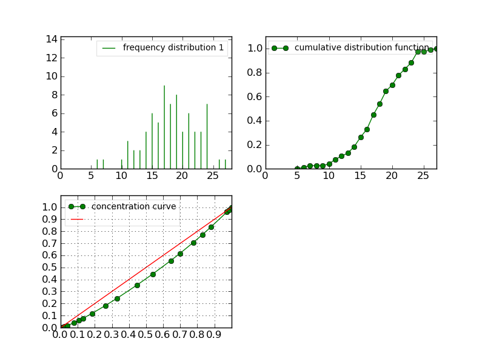
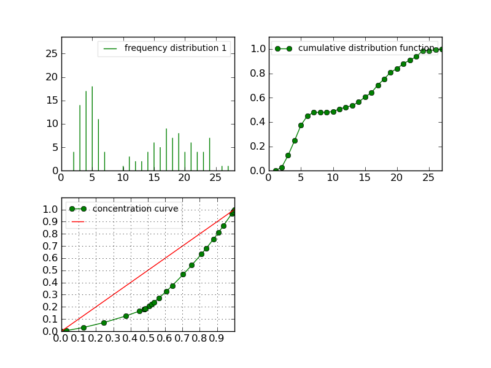

Histogram#
Here is a brief description of the Histogram type.
Constructor#
Histogram like most of the objects available can be generated by loading an ASCII file – following the syntax given in histogram – or with a list of values, that will be processed into an histogram.
For instance, let us suppose that you have a valid ASCII file, then simply
load it using the Histogram() class so as
to create an instance of Histogram
>>> h1 = Histogram('./test/data/meri1.his')
Otherwise, you can construct an histogram from scratch providing a list of
numbers. The following example takes a list of numbers, construct its histogram
and returns the latter into an instance of Histogram():
>>> h2 = Histogram([1,2,2,3,4,4,4,5])
Now, you can use the methods bounded to the Histogram class.
Display#
The object h has a few methods among which some are useful to print
information on the screen or in a file. The Display method
Display() is one of them. This methods works
as follows:
>>> h1.display()
'frequency distribution - sample size: 76\nmean: 18.0263 variance: 18.4526 standard deviation: 4.29565\ncoefficient of skewness: -0.370952 coefficient of kurtosis: -0.0181747\nmean absolute deviation: 3.3705 coefficient of concentration: 0.132789\ninformation: -207.685 (-2.7327)\n'
>>> Display(h1)
'frequency distribution - sample size: 76\nmean: 18.0263 variance: 18.4526 standard deviation: 4.29565\ncoefficient of skewness: -0.370952 coefficient of kurtosis: -0.0181747\nmean absolute deviation: 3.3705 coefficient of concentration: 0.132789\ninformation: -207.685 (-2.7327)\n'
Note
Note here that you can call the methods in two different ways.
Display() is in fact a layer above h1.display(). We advice you to use
this function instead of the methods .display. The function Display will
indeed allow you to add extra layer of robustness and flexibility over the
methods (because the function is written in python). There are a few
functions like that (Save, Display, Estimate, Simulate) that we will see
in this tutorial.
There is another method that is very similar to Display, that is called ascii_write. It prints ASCII information on the screen as well, but with a nicer layout by taking the special character ‘n’ into account:
>>> print h1.ascii_write(True)
>>> print h1.ascii_write(False)
histogram - sample size: 66
mean: 4.37879 variance: 1.62354 standard deviation: 1.27418
coefficient of skewness: 0.0727983 coefficient of kurtosis: -0.709664
mean absolute deviation: 1.06841 coefficient of concentration: 0.161214
information: -107.512 (-1.62897)
If the str() function is implemented, you can again obtain the same kind
of results using :
>>> str(h1) # equivalent to Display(h1)
'frequency distribution - sample size: 76\nmean: 18.0263 variance: 18.4526 standard deviation: 4.29565\ncoefficient of skewness: -0.370952 coefficient of kurtosis: -0.0181747\nmean absolute deviation: 3.3705 coefficient of concentration: 0.132789\ninformation: -207.685 (-2.7327)\n'
>>> print str(h1) # equivalent to print Display(h1) or h1.file_ascii_write(False)
frequency distribution - sample size: 76
mean: 18.0263 variance: 18.4526 standard deviation: 4.29565
coefficient of skewness: -0.370952 coefficient of kurtosis: -0.0181747
mean absolute deviation: 3.3705 coefficient of concentration: 0.132789
information: -207.685 (-2.7327)
Saving#
In the constructor section, we’ve seen that we can load an histogram from an ASCII file. So, the next step is to know how to save an histogram.
Let us continue using the h1 variable. Saving, can be done in two equivalent
ways using the Save() function or the save methods:
>>> h1.save('test.dat')
>>> Save(h1, 'test.dat')
Then, you can construct a new instance as follows:
>>> dummy = Histogram('test.dat')
Plotting#
old AML style
h.old_plot()
new style, either with GNUPLOT or MATPLOTLIB. By default, matplotlib is used if it is implemented:
>>> clf()
>>> h1.plot(show=False)
>>> savefig('doc/user/stat_tool_histogram_plot.png')
>>> # by default, the Plot routine uses matplolib (if available)
>>> # but you can still use gnuplot
>>> plot.set_plotter(plot.gnuplot())
>>> # and come back to matplotlib later on
>>> plot.set_plotter(plot.mtplotlib())

There are other methods related to GNUPLOT that we will not supported anymore in the future:
>>> h1.plot_write('output', 'title')
>>> h1.print_plot() # save gnuplot output in a postscript file
Clustering#
Histograms can be clustered. See Cluster()
>>> h1.cluster_information(0.5)
# equivalently
>>> Cluster(h1, "Information", 0.5)
>>> h1.cluster_limit([1,2])
# equivalently
>>> Cluster(h1, "Limit", [1,2])
>>> h1.cluster_step(3)
# equivalently
>>> Cluster(h1, "Step", 3)
Warning
Again, although the function is equivalent to the method, we advice you to use the functions. See Display section for details.
Merging#
the following examples illustrates the usage of the
Merge() function. See also
Figure Figure: The merging of two histograms for the output plots.
>>> # load two histograms
>>> h1 = Histogram('./test/data/meri1.his')
>>> clf(); h1.plot(show=False); savefig('doc/user/stat_tool_histogram_h1.png')
>>> h5 = Histogram('./test/data/meri5.his')
>>> clf(); h5.plot(show=False); savefig('doc/user/stat_tool_histogram_h5.png')
The two original histograms are shown here below:

{kind=link}
{kind=link}
>>> a = Merge(h1,h5)
>>> b= h1.merge([h5])
>>> c = h5.merge([h1])
>>> clf(); a.plot(show=False)
>>> savefig('doc/user/stat_tool_histogram_merging.png')
{kind=link}

Figure: The merging of two histograms#